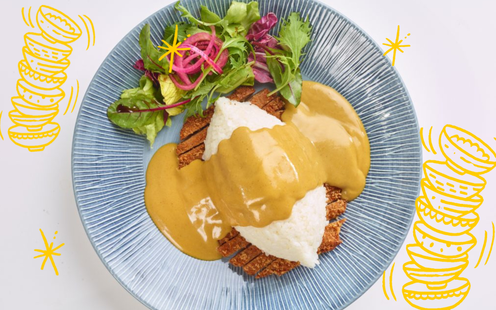

Ingredients
- 120g rice
- 2 skinless chicken breasts
- 50g plain flour
- 2 eggs, lightly beaten
- 100g panko breadcrumbs
- 75ml vegetable oil, for deep-frying
- 40g mixed salad leaves
- 3 tbsp vegetable oil
- 1 onion, finely chopped
- 1 garlic clove, crushed
- 2.5cm piece of ginger, peeled + grated
- 1 tsp turmeric
- 2 heaped tbsp mild curry
Description
Chicken Katsu Curry from Gizzi Erskine's Kitchen Magic. Recreate your Wagamamas favourite and make katsu curry at home. This Japanese-inspired curry is a decadent treat with its fried, breaded chicken and a smooth curry sauce.
Steps
-
Make the sauce
- Start to soften the onions, garlic + ginger. then add curry powder, turmeric. allow to sit on a low to medium heat
- Add the flour, cook for 1 minute with the spices. add the chicken stock slowly, followed by the 100ml coconut milk. add pinch of sugar, salt + dash of soy sauce
- Strain through a sieve, a little bit at a time, to make it smooth
- Cook the rice according to the packet instructions
- Split chicken fillets in half + coat in flour. soak each one in egg, then dip into breadcrumbs. make sure all sides of the chicken are covered, then put into the pan. cook fillets until golden brown
- Slice the chicken into lengths + plate up next to the rice. add salad, or wok-fried greens to the plate alongside, then drench in curry sauce